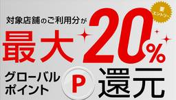
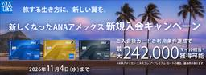
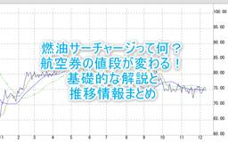
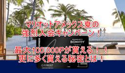
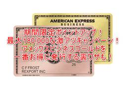

平均年収陸マイラーの毎年家族で海外旅行
https://sasamiler.net
陸マイラーとしてマイルをお得に貯める方法を紹介するブログ
フィード

激やば！最大45,000円相当はすごい！三菱UFJカードで最大20％還元は強すぎ！5条件まとめから対象店舗増、上限金額も増えた！！
平均年収陸マイラーの毎年家族で海外旅行
激やば！最大45,000円相当はすごい！三菱UFJカードで最大20％還元は強すぎ！5条件まとめから対象店舗増、上限金額も増えた！！ おはようございます！sasasanです。 今年に入ってから銀行系のクレジットカードがとに…
1日前
超限定！モッピー新規入会で更に1人紹介で7,000円分ポイントは激アツ！一気に大量のお小遣いを稼ぐ！！おすすめ案件も紹介！！
平均年収陸マイラーの毎年家族で海外旅行
超限定！モッピー新規入会で更に1人紹介で7,000円分ポイントは激アツ！一気に大量のお小遣いを稼ぐ！！おすすめ案件も紹介！！ こんにちは！sasasanです。 陸マイラー御用達のポイントサイトって知っていま…
2日前

2026年9月最新！リニューアルANAアメックス入会キャンペーンで最大247,500ANAマイル！大量マイルのお得な発行方法、更に貰う裏ワザ！ 6
6
平均年収陸マイラーの毎年家族で海外旅行
リニューアルしたANAアメックスゴールドカードの入会キャンペーンが過去最強に激アツ！ANAアメックスプレミアムなら最大247,500ANAマイルが貰える！ 2026年9月以降の最新のANAアメックスの入会キャンペーンが知…
4日前
【2026年版】ポイ活の稼ぎ方！1か月で10万円を稼ぐ方法と手順！利用方法の注意点も解説！！ 4
平均年収陸マイラーの毎年家族で海外旅行
【2026年最新版】ポイ活の稼ぎ方！まずは1か月で10万円を稼ぐ方法！利用、注意点も解説！！ ポイ活の稼ぎ方を知りたい ポイ活で大量のポイントを貯めたい そんな悩みを解決する記事となります。 皆さんポイ活し…
5日前
2026年9月最新！JALマイル80％交換なモッピーのJALドリームキャンペーンの条件、詳細のまとめ！ 2
平均年収陸マイラーの毎年家族で海外旅行
2026年9月最新！JALマイル80％交換なモッピーのJALドリームキャンペーンの条件、詳細のまとめ！ こんにちは！sasasanです。 モッピーのJALドリームキャンペーンの条件が大幅改善です！！ モッピ…
5日前
2026年9月最新のJGC修行完全ガイド！新プログラムでどう変わった？JAL修行、FOP修行のメリット、やり方、費用を最小限にする裏技テクニック！ 5
平均年収陸マイラーの毎年家族で海外旅行
JGC修行を徹底解説！JALのステータスJGCとは？新プログラムでどう変わったのか？最新のメリットや修行費用を最小限にする裏技教えます！ 「JAL Life Status プログラム」により2024年からJGC修行の方法…
5日前

2026年9月最新のANA、JALの燃油サーチャージの推移まとめ。値上げ、値下げの料金の仕組みを解説 4
平均年収陸マイラーの毎年家族で海外旅行
2026年9月最新！ANA、JALの燃油サーチャージの推移まとめ。値上げ、値下げの料金の仕組みを解説 【2026年9月1日追記】 ANA、JALの2026年9月~2026年10月はゾーンO！なんと更に5段階ダウンで大歓喜…
5日前
2026年9月最新！マリオットの最新キャンペーン、プロモーションのまとめ！最新から過去までの一覧。 4
平均年収陸マイラーの毎年家族で海外旅行
2026年9月最新！マリオットの最新キャンペーン、プロモーションを解説！最新のものから過去のものまで総まとめ！ マリオットの最新キャンペーンを知りたい！ 今利用できるマリオットのキャンペーンが知りたい！ 過去のキャンペー…
5日前

2026年9月最新！マリオットアメックス入会キャンペーンで最大100,000ポイント貰える！超お得に発行する裏ワザとは？ 2
平均年収陸マイラーの毎年家族で海外旅行
2026年9月最新！マリオットアメックス入会キャンペーンは最大100,000ポイントで激アツ！超お得に発行する裏ワザとは？ こんにちは！sasasanです。 陸マイラー、ホテラーにとってもっとも人気があるクレジットカード…
5日前

2026年9月最新！アメックスビジネスゴールドの入会キャンペーンが170,000ポイント激アツ！更にポイントを貰う裏ワザ？ 1
平均年収陸マイラーの毎年家族で海外旅行
2026年9月最新！アメックスビジネスゴールドの入会キャンペーンが170,000ポイント激アツ！更にポイントを貰う裏ワザ？ こんにちは！sasasanです。 陸マイラーの間で大量ポイントが稼げるキャンペーン…
5日前